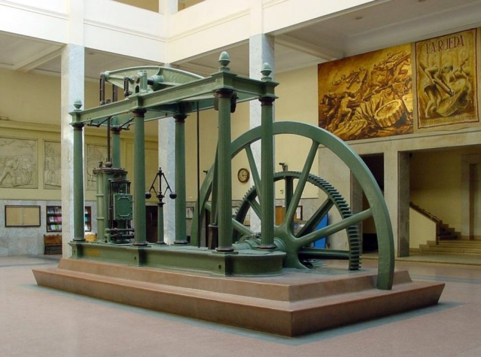

Modern Era
year 1500 to today

The modern era or the modern period is considered the current historical period of human history. It was originally applied to the history of Europe and Western history for events that came after the Middle Ages, often from around the year 1500, like the Reformation in Germany giving rise to Protestantism. Since the 1990s, it has been more common among historians to refer to the period after the Middle Ages and up to the 19th century as the early modern period. The modern period is today more often used for events from the 19th century until today. The time from the end of World War II (1945) can also be described as being part of contemporary history. The common definition of the modern period today is often associated with events like the French Revolution, the Industrial Revolution, and the transition from nationalism toward the liberal international order.